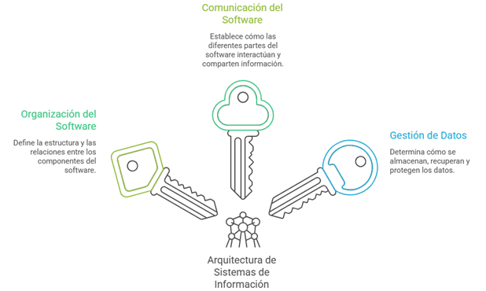
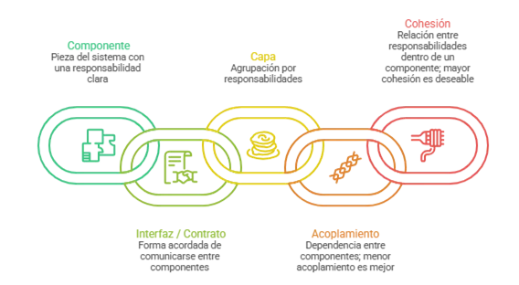
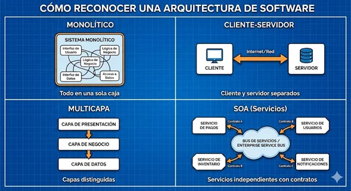
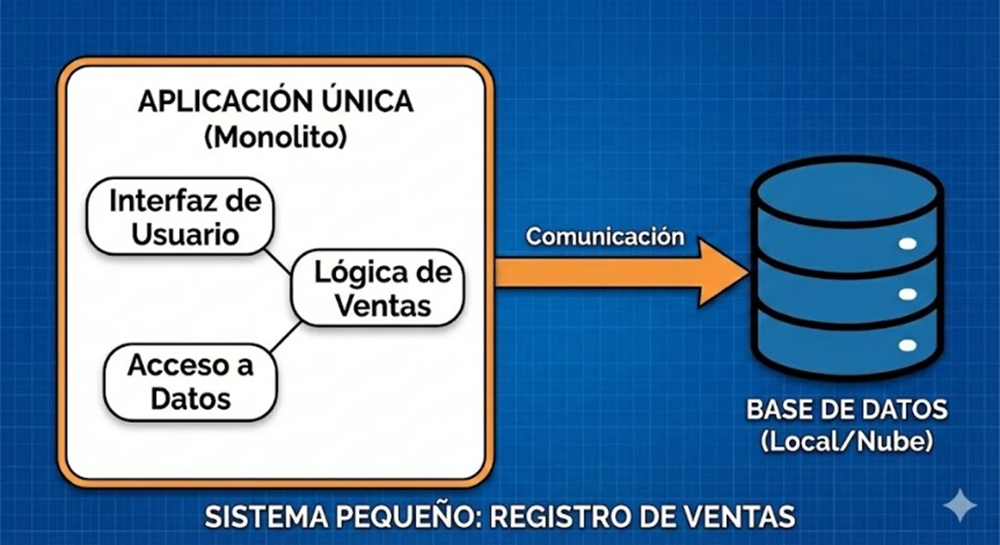
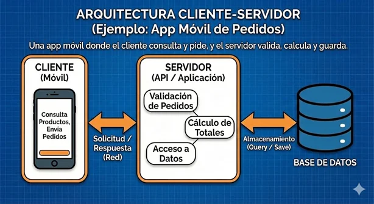
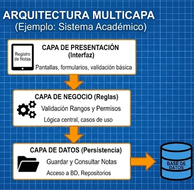
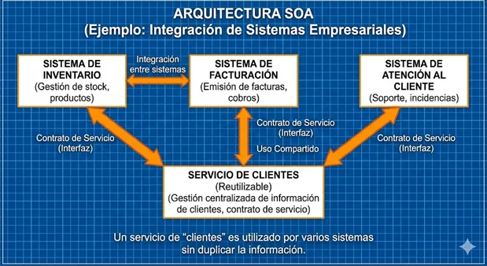
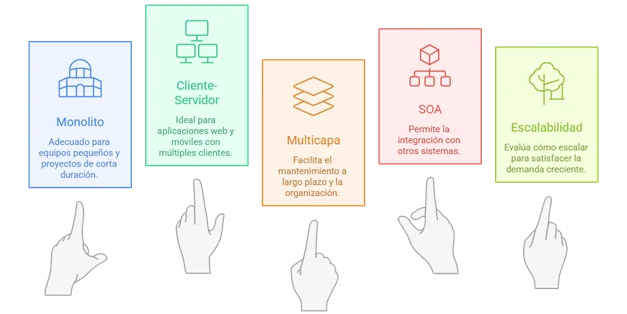

Fundamentos de arquitectura de sistemas
Cuando desarrollas un sistema (una app, una web o un software de escritorio), no solo importa que “funcione”: también importa que sea fácil de mantener, que pueda crecer si llegan más usuarios y que no se vuelva lento o difícil de actualizar. La arquitectura es, en pocas palabras, el “plano” que organiza las partes del sistema: qué va junto, qué se separa y cómo se comunican los componentes.
En esta temática abordaremos cuatro arquitecturas muy usadas (monolítica, cliente-servidor, multicapa y SOA). Las aprenderás con ejemplos sencillos y criterios prácticos para elegir la mejor según el problema. Al final, aplicarás lo aprendido a un caso de análisis.
Objetivos de aprendizaje
- ✓ 🧠 Definir qué es la arquitectura de un sistema de información y describir sus elementos generales.
- ✓ 🔍 Diferenciar las arquitecturas monolíticas, cliente-servidor, multicapa y orientada a servicios (SOA) según estructura, ventajas, limitaciones y casos de uso.
- ✓ 📝 Identificar la arquitectura más adecuada para necesidades básicas de software a partir de escenarios o requerimientos dados.
Fundamentos de arquitectura de sistemas
¿Qué es la arquitectura de Información?
La arquitectura de un sistema de información es el conjunto de decisiones de alto nivel que define: cómo se organiza el software, cómo se comunican sus partes, y cómo se gestionan los datos, para cumplir requisitos funcionales (lo que hace el sistema) y no funcionales (rendimiento, seguridad, disponibilidad, escalabilidad, entre otros).

Conceptos base
Componente: pieza del sistema con una responsabilidad clara (módulo, servicio, base de datos, interfaz).
Interfaz / contrato: forma acordada de comunicarse entre componentes (por ejemplo, una API).
Capa: agrupación por responsabilidades (presentación, negocio, datos).
Acoplamiento: qué tanto depende un componente de otro; a menor acoplamiento, suele ser más fácil cambiar.
Cohesión: qué tan relacionadas están las responsabilidades dentro de un mismo componente; mayor cohesión es deseable.

¿Cómo reconocer una arquitectura?
Una forma rápida es dibujar el sistema con cajas y flechas: las cajas son componentes (o capas/servicios) y las flechas son comunicaciones. Si todo está dentro de una sola caja, suele ser monolítico; si hay cliente y servidor separados, es cliente-servidor; si además se distinguen capas, es multicapa; y si hay varios servicios independientes con contratos, es SOA.

Arquitectura monolítica
En la arquitectura monolítica, la mayor parte de la funcionalidad se implementa y se despliega como una sola unidad. Normalmente se empaqueta una aplicación que incluye interfaz, lógica de negocio y acceso a datos.
Esquema:
[ Interfaz + Lógica de negocio + Acceso a datos ] → Base de datos💡Ejemplo:
Un sistema pequeño para registrar ventas en una tienda (un solo equipo de trabajo, pocos usuarios, cambios poco frecuentes). Se puede crear una aplicación única que guarde todo en una base de datos local o en la nube.

👍Ventajas
- ✓ Sencilla para iniciar: menos piezas, menos configuración y despliegue rápido.
- ✓ Depuración directa: el flujo de ejecución suele ser más fácil de seguir.
📉Limitaciones
- ✓ Cuando crece, aumenta el acoplamiento y se dificulta modificar sin afectar otras partes.
- ✓ Escalar implica replicar toda la aplicación, aunque solo una parte necesite más recursos.
Arquitectura cliente - servidor
En este modelo se separa la aplicación en dos roles principales: cliente (presentación e interacción) y servidor (procesamiento, reglas del negocio y acceso a datos). El cliente realiza solicitudes y el servidor responde.
Esquema:
Cliente (web/app) ↔ Servidor (API / aplicación) ↔ Base de datos💡Ejemplo:
Una app móvil de pedidos donde el celular (cliente) consulta productos y envía pedidos, mientras que el servidor valida el pedido, calcula totales y guarda la información en la base de datos.

👍Ventajas
- ✓ Centraliza datos y reglas en el servidor, facilitando control y actualizaciones
- ✓ Permite múltiples clientes (web, móvil) consumiendo el mismo servidor.
📉Limitaciones
- ✓ Si el servidor no se diseña bien, puede convertirse en cuello de botella o punto único de falla.
- ✓ Requiere gestionar red, seguridad y disponibilidad del servidor.
Arquitectura multicapa (3 capas / n-capas)
La arquitectura multicapa organiza el sistema en capas con responsabilidades claras. La versión más común es 3 capas: presentación (interfaz), negocio (reglas/casos de uso) y datos (persistencia).
Esquema:
Presentación → Negocio → Datos → Base de datosTabla de Esquema Simplificado
| Capa | Responsabilidad principal |
|---|---|
| Presentación | Interacción con el usuario (pantallas, formularios, validaciones básicas). |
| Negocio | Reglas, casos de uso, lógica central del sistema (qué se puede y qué no se puede hacer). |
| Datos | Acceso a base de datos, consultas, repositorios, persistencia. |
💡Ejemplo:
Un sistema académico: la interfaz permite registrar notas (presentación), la capa de negocio valida reglas (por ejemplo, rangos de calificación y permisos), y la capa de datos guarda y consulta en la base de datos.

👍Ventajas
- ✓ Mejora el mantenimiento: cambios en una capa impactan menos a las otras.
- ✓ Facilita pruebas y organización del trabajo (por responsabilidades).
📉Limitaciones
- ✓ Mayor complejidad inicial que un monolito simple.
- ✓ Puede aumentar la cantidad de código y la necesidad de buenas prácticas de diseño.
Arquitectura orientada a servicios (SOA)
SOA organiza el sistema como un conjunto de servicios independientes que exponen funcionalidades a través de contratos (interfaces). Cada servicio se centra en una capacidad del negocio y puede ser usado por otros sistemas.
Esquema:
Servicio A ↔ Servicio B ↔ Servicio C (cada uno con su contrato) + Integración entre sistemas💡Ejemplo:
Una organización que tiene varios sistemas (inventario, facturación, atención al cliente) y necesita que se integren. Un servicio de “clientes” puede ser utilizado por varios aplicativos sin duplicar la información.

👍Ventajas
- ✓ Reutilización: un servicio puede ser consumido por diferentes sistemas.
- ✓ Escala organizacional: facilita integración y evolución por módulos de negocio.
📉Limitaciones
- ✓ Mayor esfuerzo de diseño y gobernanza (versionado, contratos, monitoreo).
- ✓ La comunicación entre servicios puede añadir complejidad y latencia.
Criterios prácticos para seleccionar arquitecturas
Para seleccionar una arquitectura de sistemas adecuada, es necesario analizar el contexto del proyecto y las necesidades reales de la solución, considerando aspectos como el tipo de aplicación, el número de usuarios, el nivel de escalabilidad requerido, la seguridad, el rendimiento, la facilidad de mantenimiento y los recursos disponibles (tiempo, presupuesto e infraestructura).

✍️ “Diagnóstico de arquitectura por casos de estudio”
Propósito: Que el estudiante identifique, a partir de necesidades reales, cuál arquitectura conviene implementar (Monolítica, Cliente–Servidor, Multicapa, SOA) y sustente su elección con criterios técnicos.
Modalidad: Individual o en parejas
Instrucciones:
Lee cada caso y elige una arquitectura: Monolítica / Cliente–Servidor / Multicapa / SOA.
Justifica tu elección con mínimo 3 criterios (por ejemplo: número de usuarios, escalabilidad, mantenimiento, etc.).
Indica un riesgo de tu elección y una mitigación (cómo lo reducirías).
Casos de estudio.
Caso 1: Cafetería del campus
Una cafetería necesita registrar productos, ventas diarias y cierres de caja. Solo lo usarán 2 personas en 1 computador. No hay acceso externo ni integraciones. Cambios muy ocasionales.
Caso 2: Turnos para atención en ventanilla
Una oficina requiere una consola para asignar turnos y una pantalla para mostrarlos. Debe guardar historial diario y generar reportes semanales. Se usará en 3 puntos de atención del mismo edificio.
Caso 3: Pedidos para restaurante (móvil + panel interno)
Clientes hacen pedidos desde una app móvil. Cocina y caja usan un panel web interno. Debe manejar autenticación, estados del pedido y registro de ventas en base de datos. Se espera crecer a 2 sedes en 6 meses.
Caso 4: Sistema académico con reglas
Sistema para matrículas, notas, asistencia, boletines y reportes. Hay reglas (prerrequisitos, rangos de calificación, permisos por rol). Cambios frecuentes por ajustes internos del instituto.
Caso 5: Portal institucional por módulos
Una universidad quiere un portal único con módulos: admisiones, biblioteca, bienestar y egresados. Deben compartir usuarios/roles, pero cada módulo evoluciona a ritmos distintos. El equipo quiere trabajar por módulos sin “romper” el resto.
Caso 6: Integración de sistemas (legacy + nuevos)
Una empresa ya tiene inventario (antiguo), contabilidad (ERP) y un nuevo sistema de ventas. Necesitan unificar consulta de clientes/productos sin duplicar datos, y permitir que los sistemas intercambien información con contratos claros.
Caso 7: Servicios compartidos institucionales
Varias aplicaciones deben consumir servicios centrales: autenticación, notificaciones y pagos. Se exige control de versiones, monitoreo y reglas claras para cambios sin afectar a las aplicaciones consumidoras.
Caso 8: Interoperabilidad entre organizaciones
Dos instituciones necesitan intercambiar información (por ejemplo, estudiantes/prácticas). Cada una mantiene su base de datos. Se requiere seguridad, auditoría, trazabilidad y acuerdos estandarizados de intercambio.
💡 Pista: Debes escoger una de las arquitecturas vista y aplicarla a cada caso, luego justifica tu respuesta.
Evaluación
Instrucciones: Lee cada pregunta con atención. Solo una de las opciones es correcta.
Objetivo: Evaluar la comprensión de conceptos clave y los tipos de arquitectura vistos en esta temática.
Evaluación
1. ¿Qué define fundamentalmente la arquitectura de un sistema de información?
2. En el diseño de componentes, ¿cuál es la combinación ideal para que un sistema sea fácil de cambiar y mantener?
3. ¿Cuál es la principal limitación de una arquitectura monolítica cuando el sistema necesita crecer significativamente?
4. En la arquitectura Cliente - Servidor, ¿cuál es la responsabilidad primordial del "Cliente"?
5. Un sistema académico, construido bajo la arquitectura multicapas, valida que una nota esté en el rango de 0.0 a 5.0 antes de guardarla. ¿En qué capa ocurre específicamente esta validación de reglas?
6. ¿Qué se entiende por "contrato" o "interfaz" dentro del paradigma de SOA?
7. Si se requiere desarrollar un sistema para una cafetería pequeña, que solo usarán 2 personas en un computador sin acceso externo, la arquitectura más adecuada es:
8. ¿Cuál de las siguientes arquitecturas destaca por permitir que un servicio (ej. "pagos" o "notificaciones") sea consumido por diferentes sistemas de una organización sin duplicar información?
Recursos para profundizar
-
Guía de Arquitectura de Sistemas para Desarrolladores
Ir al recursoInfografía sobre fundamentos de arquitectura de sistemas
-
Bibliografía
- Bass, L., Clements, P., & Kazman, R. (2013). Software Architecture in Practice (3rd ed.). Addison-Wesley / SEI Series. https://ptgmedia.pearsoncmg.com/images/9780321815736/samplepages/0321815734.pdf?
- Cervantes, H., Velasco, P., & Castro, L. (2016). Arquitectura de software. Conceptos y ciclo de desarrollo. México, DF: Cengage Learning Editores. https://bibliotecadigital.utn.edu.ec/files/original/648e625c1a4cb5f7b35322d92fb8f4d20055d38c.pdf
- García de Zuñiga, F. (2025). Todo sobre la arquitectura cliente-servidor. Arsys. Recuperado de: https://www.arsys.es/blog/todo-sobre-la-arquitectura-cliente-servidor
- Gonzaga, E. A., Cedillo, J. A. Á., & Mejía, A. G. (2006). Arquitecturas en n-Capas: Un Sistema Adaptivo. Polibits, (34), 34-37. https://www.redalyc.org/pdf/4026/402640447007.pdf
- Guimarey, A. (2020). Beneficios y riesgos de migrar una arquitectura monolítica a microservicios. Recuperado de: https://www.researchgate.net/publication/348309479_Beneficios_y_riesgos_de_migrar_una_arquitectura_monolitica_a_microservicios
- IBM. (2024), ¿Qué es la arquitectura monolítica?. Recuperado de: |https://www.ibm.com/think/topics/monolithic-architecture.
- RedHat. (2026) SOA: ¿Qué es la arquitectura orientada a los servicios?. Recuperado de: https://www.redhat.com/es/topics/cloud-native-apps/what-is-service-oriented-architecture
- OASIS. (2006). Reference Model for Service Oriented Architecture 1.0 (C. M. MacKenzie et al.). OASIS Standard. Recuperado de: https://docs.oasis-open.org/soa-rm/v1.0/soa-rm.pdf
- Software Engineering Institute (SEI), Carnegie Mellon University. (2013). Architecture and Design of Service-Oriented Systems (Part 1). Recuperado de: https://www.sei.cmu.edu/documents/5462/2013_018_101_60977.pdf
- Microsoft. (2025). N-tier architecture style (Azure Architecture Center). Recuperado de: https://learn.microsoft.com/en-us/azure/architecture/guide/architecture-styles/n-tier?
- Microsoft. (2023). Common web application architectures (.NET Architecture). Recuperado de: https://learn.microsoft.com/en-us/dotnet/architecture/modern-web-apps-azure/common-web-application-architectures?